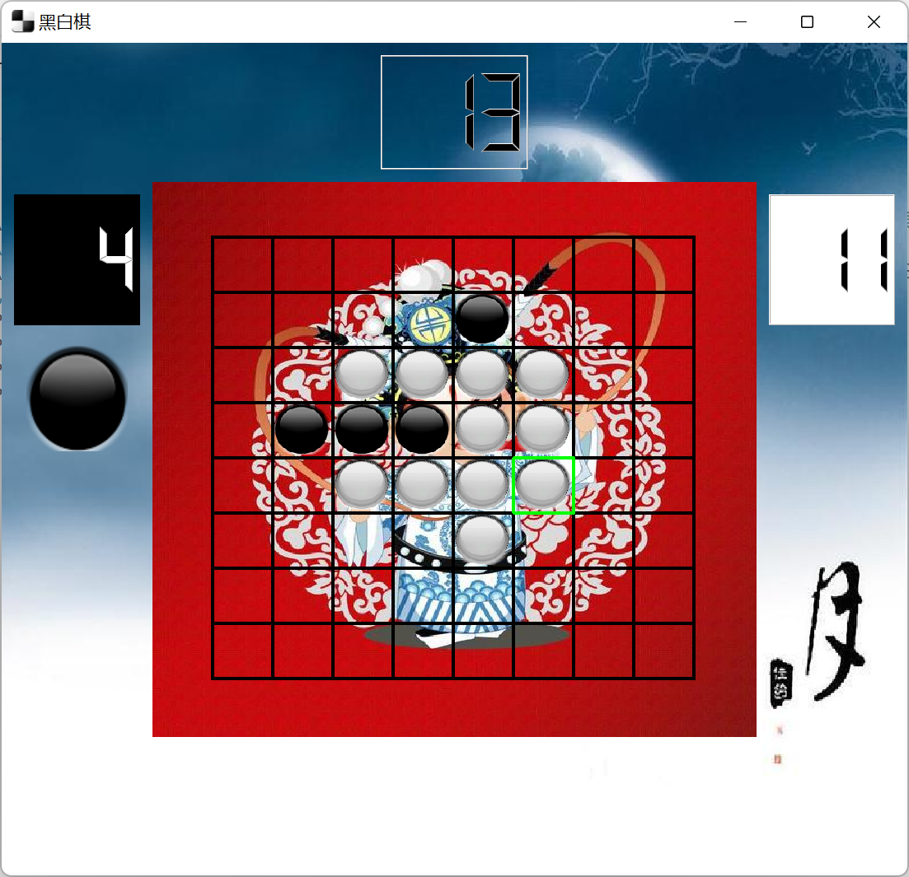
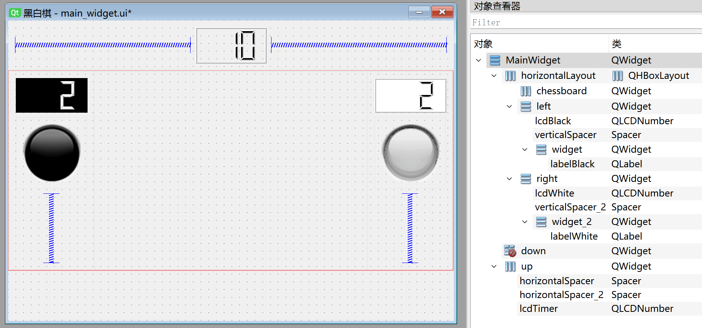

<!DOCTYPE lake>
<p data-lake-id="u63414ca0" id="u63414ca0" style="text-align: center"></p><h2 data-lake-id="GAeVl" id="GAeVl"><span data-lake-id="u2b4932cc" id="u2b4932cc">游戏介绍</span></h2><p data-lake-id="u8d971129" id="u8d971129"><span class="lake-fontsize-12" data-lake-id="u413d3708" id="u413d3708" style="color: rgb(63, 63, 63)">黑白棋，又称翻转棋（Reversi）、奥赛罗棋（Othello）或苹果棋，是一种两人对弈的策略棋类游戏。以下是其基本规则：</span></p><ol list="u59b3dd6f"><li data-lake-id="u2dbb0123" fid="u06627ff0" id="u2dbb0123"><strong><span class="lake-fontsize-12" data-lake-id="uc87d17b6" id="uc87d17b6" style="color: var(--tw-prose-bold)">棋盘：</span></strong><span class="lake-fontsize-12" data-lake-id="u3dd1f46e" id="u3dd1f46e" style="color: rgb(55, 65, 81)"> 使用标准的 8x8 棋盘。起始时在中间放置四枚棋子，形成对角线交叉的模样。</span></li><li data-lake-id="u58b009dc" fid="u06627ff0" id="u58b009dc"><strong><span class="lake-fontsize-12" data-lake-id="u072b26cd" id="u072b26cd" style="color: var(--tw-prose-bold)">玩家身份：</span></strong><span class="lake-fontsize-12" data-lake-id="u6383c861" id="u6383c861" style="color: rgb(55, 65, 81)"> 一方执黑棋，另一方执白棋。</span></li><li data-lake-id="uce6fa0e9" fid="u06627ff0" id="uce6fa0e9"><strong><span class="lake-fontsize-12" data-lake-id="ue8e373b8" id="ue8e373b8" style="color: var(--tw-prose-bold)">开局：</span></strong><span class="lake-fontsize-12" data-lake-id="u52cd483a" id="u52cd483a" style="color: rgb(55, 65, 81)"> 游戏开始时，中间的四颗棋子按照黑白相间的方式排列。</span></li><li data-lake-id="u55cd3d9d" fid="u06627ff0" id="u55cd3d9d"><strong><span class="lake-fontsize-12" data-lake-id="u67a98a3f" id="u67a98a3f" style="color: var(--tw-prose-bold)">落子：</span></strong><span class="lake-fontsize-12" data-lake-id="ucbcbcef2" id="ucbcbcef2" style="color: rgb(55, 65, 81)"> 轮流由黑方和白方落子。每一步，玩家在一个空格上放置自己的棋子，使对方的一个或多个棋子被夹在新放置的棋子和已有的棋子之间。</span></li><li data-lake-id="uf24c3be3" fid="u06627ff0" id="uf24c3be3"><strong><span class="lake-fontsize-12" data-lake-id="udbdb12df" id="udbdb12df" style="color: var(--tw-prose-bold)">翻转对方棋子：</span></strong><span class="lake-fontsize-12" data-lake-id="ud44913f2" id="ud44913f2" style="color: rgb(55, 65, 81)"> 落子后，夹在新放置的棋子和已有的棋子之间的对方棋子会被翻转变成己方棋子。</span></li><li data-lake-id="u70e2d58f" fid="u06627ff0" id="u70e2d58f"><strong><span class="lake-fontsize-12" data-lake-id="uc0b2d8af" id="uc0b2d8af" style="color: var(--tw-prose-bold)">无子可落时：</span></strong><span class="lake-fontsize-12" data-lake-id="u6fdf47bc" id="u6fdf47bc" style="color: rgb(55, 65, 81)"> 如果一方无法进行合法的落子，则该方放弃该轮，对方继续行动。</span></li><li data-lake-id="u090b7d54" fid="u06627ff0" id="u090b7d54"><strong><span class="lake-fontsize-12" data-lake-id="u641b9b10" id="u641b9b10" style="color: var(--tw-prose-bold)">游戏结束：</span></strong><span class="lake-fontsize-12" data-lake-id="u3b7c3c7f" id="u3b7c3c7f" style="color: rgb(55, 65, 81)"> 游戏结束时，棋盘被填满或者双方都无法进行合法的落子。胜者是拥有更多棋子的一方。</span></li><li data-lake-id="u2ffbadcc" fid="u06627ff0" id="u2ffbadcc"><strong><span class="lake-fontsize-12" data-lake-id="ufcfbec35" id="ufcfbec35" style="color: var(--tw-prose-bold)">胜负判定：</span></strong><span class="lake-fontsize-12" data-lake-id="uab994d74" id="uab994d74" style="color: rgb(55, 65, 81)"> 胜者是拥有最多棋子的一方。</span></li></ol><p data-lake-id="u811dc4a6" id="u811dc4a6"><span class="lake-fontsize-12" data-lake-id="uc25c6e4e" id="uc25c6e4e" style="color: rgb(55, 65, 81)">​</span><br/></p><p data-lake-id="ubf174d1f" id="ubf174d1f"><span class="lake-fontsize-12" data-lake-id="ufd03fe54" id="ufd03fe54" style="color: rgb(55, 65, 81)">​</span><br/></p><h2 data-lake-id="ujdRh" id="ujdRh"><span data-lake-id="u1f899049" id="u1f899049" style="color: rgb(55, 65, 81)">完整代码和资源</span></h2><ul list="u0fc5772e"><li data-lake-id="u692f9c77" fid="ud10d6214" id="u692f9c77"><span class="lake-fontsize-12" data-lake-id="ufe5739d1" id="ufe5739d1">简单版本：</span><a class="yuque-card-link" href="../../_assets/dcc7347277cf0f3ee95ab965.zip">黑白棋简单版本.zip</a></li><li data-lake-id="ua0a267b1" fid="ud10d6214" id="ua0a267b1"><span class="lake-fontsize-12" data-lake-id="u805440fa" id="u805440fa">封装版本：</span><a class="yuque-card-link" href="../../_assets/5e1df5c0eba41031745fd905.zip">黑白棋封装版本.zip</a></li><li data-lake-id="u1cd9d2cf" fid="ud10d6214" id="u1cd9d2cf"><span class="lake-fontsize-12" data-lake-id="ucbba9828" id="ucbba9828">图片资源：</span><a class="yuque-card-link" href="../../_assets/5508fb8f35ad18c9df7cda12.zip">img.zip</a></li></ul><p data-lake-id="u04f0d44e" id="u04f0d44e"><br/></p><h2 data-lake-id="gSdPw" id="gSdPw"><span data-lake-id="ue0c8d9e2" id="ue0c8d9e2">实现思路</span></h2><ul list="uaa23264f"><li data-lake-id="ud76a4721" fid="ua8dc1534" id="ud76a4721"><span class="lake-fontsize-12" data-lake-id="u1ca074e4" id="u1ca074e4">说明：只是例举核心思路，直接拷贝代码，不一定能运行</span></li></ul><h3 data-lake-id="K9bOG" id="K9bOG"><span data-lake-id="uabbaf628" id="uabbaf628">主页面布局</span></h3><p data-lake-id="uece0cac4" id="uece0cac4"></p><p data-lake-id="ub9476f80" id="ub9476f80"><br/></p><h3 data-lake-id="q82FL" id="q82FL"><span data-lake-id="u1f6af7bc" id="u1f6af7bc">画背景和棋盘</span></h3><span class="yuque-card-unsupported">[codeblock]</span><p data-lake-id="u446e8fef" id="u446e8fef"><br/></p><h3 data-lake-id="idrt8" id="idrt8"><span data-lake-id="u9cd0dac0" id="u9cd0dac0">标志棋盘棋子状态</span></h3><span class="yuque-card-unsupported">[codeblock]</span><p data-lake-id="u515f2d3a" id="u515f2d3a"><br/></p><h3 data-lake-id="UJJdX" id="UJJdX"><span data-lake-id="u8ab034e4" id="u8ab034e4">吃子规则算法</span></h3><span class="yuque-card-unsupported">[codeblock]</span><h3 data-lake-id="micvq" id="micvq"><br/></h3><h3 data-lake-id="aB4aU" id="aB4aU"><span data-lake-id="ue05b96de" id="ue05b96de">切换角色</span></h3><span class="yuque-card-unsupported">[codeblock]</span><p data-lake-id="u62ca77b6" id="u62ca77b6"><br/></p><h3 data-lake-id="PXYQJ" id="PXYQJ"><span data-lake-id="udac9da28" id="udac9da28">用户点击落子</span></h3><span class="yuque-card-unsupported">[codeblock]</span><p data-lake-id="ub1952e64" id="ub1952e64"><br/></p><h3 data-lake-id="nkQBm" id="nkQBm"><span data-lake-id="u04f5dbc2" id="u04f5dbc2">机器落子</span></h3><span class="yuque-card-unsupported">[codeblock]</span><p data-lake-id="uf3e7b998" id="uf3e7b998"><br/></p><h3 data-lake-id="nL26J" id="nL26J"><span data-lake-id="u3618c103" id="u3618c103">判断输赢</span></h3><span class="yuque-card-unsupported">[codeblock]</span>